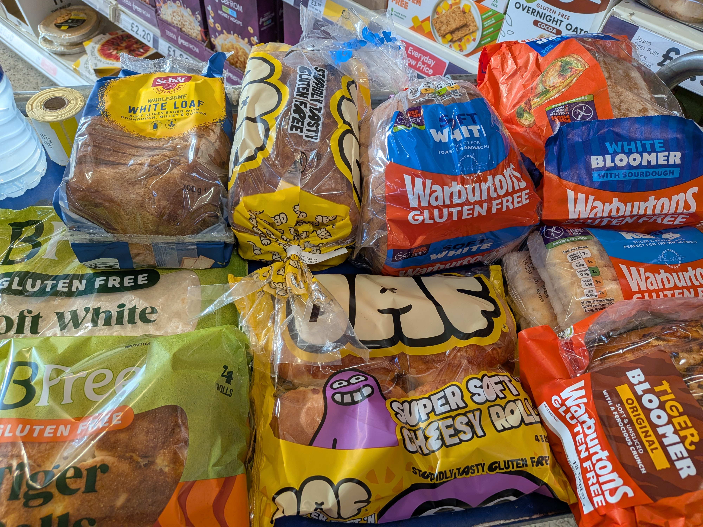

Home › Finding the Right Gluten-Free Bread

When I was diagnosed with IBS, finding out what I could and couldn’t eat was really difficult. I soon realised that bread was one of the foods causing me problems, so to stop myself spending all day running to the toilet, I decided to switch to gluten-free bread.
It made a big difference to my tummy, but finding the right gluten-free bread wasn’t easy. There are so many different brands and types to choose from, and everyone has different tastes.
When I first started eating gluten-free, people would often say, “Gluten-free bread is horrible!” But I think things have changed a lot over the years. There are now some really nice breads, rolls and wraps available, and after trying a few different ones, I’ve found the brands that work for me.
Some of my favourites are:
They all make lovely gluten-free breads, rolls and wraps.
Of course, everyone is different, so what I enjoy might not be someone else’s favourite. It really is a case of trying a few until you find the ones you like.
What’s your favourite gluten-free bread? I'd love to hear your recommendations!